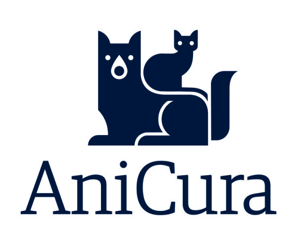

Notfall – Wann
sofort handeln?
Unter folgender Nummer erreichen Sie unter der Woche von 18:00 bis 08:00 Uhr sowie von Freitag 18:00 Uhr bis Montag 08:00 Uhr jederzeit einen Kollegen im Bereitschaftsdienst.
Tipp: Am Smartphone klicken, um direkt anzurufen.
Ersteinschätzung
Bitte prüfen Sie die Symptome Ihres Tieres. Im Zweifelsfall rufen Sie uns immer direkt an – wir helfen Ihnen bei der Einschätzung.
Das ist ein echter Notfall
- • Atemnot (starkes Hecheln, Röcheln, blaues Zahnfleisch/Zunge)
- • Bewusstlosigkeit, Kollaps, Krampfanfälle
- • Starke Blutungen oder tiefe/klaffende Wunden
- • Schwerer Unfall/Trauma (Autounfall, Sturz, Bissverletzung)
- • Starke Schmerzen mit deutlicher Verschlechterung
- • Verdacht auf Vergiftung (Rattengift, Schokolade etc.)
- • Wiederholtes Erbrechen oder Erbrechen mit Blut
- • Aufgeblähter Bauch & Würgen ohne Erbrechen (Magendrehung)
- • Kein Harnabsatz möglich (v.a. Kater: häufiges Pressen)
- • Akute Augenverletzung oder stark schmerzhaftes Auge
- • Geburtsprobleme (Pressen ohne Fortschritt)
Meistens kein Notfall
- • Leichter Durchfall – Tier ist fit, frisst und trinkt
- • Leichter Husten/Niesen ohne Atemnot
- • Lahmheit, die schon länger besteht und nicht akut schlimmer wird
- • Zecken/Parasiten, Impfungen, Routine-Kontrollen
- • Einmaliges Erbrechen – Tier wirkt ansonsten munter
- • Juckreiz, Hautprobleme oder Ohrprobleme (seit Tagen/Wochen)
- • Kleinere Wunden ohne starke Blutung
- • Krallen schneiden, Futterberatung
Wichtig: Wird Ihr Tier plötzlich sehr apathisch, bekommt Atemnot, blutet stark oder kann nicht urinieren, wird aus „kein Notfall“ schnell ein Notfall – dann bitte sofort melden.
Notfall-Kliniken
Außerhalb unserer Sprechzeiten stehen Ihnen in dringenden Notfällen rund um die Uhr (24h / 365 Tage) die folgenden Kliniken zur Verfügung.

AniCura Klinik Ludwigsburg
Spezialisiert auf Akutfälle
location_on
Karl-Heinrich-Käferle-Straße 2
71640 Ludwigsburg
AniCura Klinik Heilbronn
Erfahrene Kleintierspezialisten
location_on
Ferdinand-Braun-Straße 2
74074 Heilbronn
Vor der Abfahrt vorbereiten
Heimtierausweis / Impfpass griffbereit halten.
Aktuelle Medikamentenliste notieren.
Tier sicher in einer Transportbox sichern.
Telefonische Anmeldung nicht nötig.